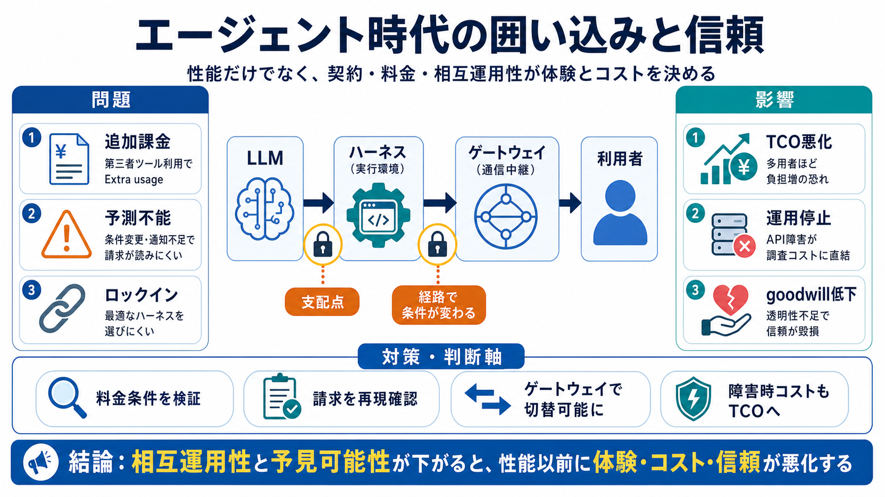

Claude Code Rate Limits Hit Again? The 55% Cheaper Alternative in 2026
# Paid $200 for Claude Max and Still Hit the Limit? Here's the Alternative Developers Are Switching To. If you're paying…

# Paid $200 for Claude Max and Still Hit the Limit? Here's the Alternative Developers Are Switching To. If you're paying…
## For AI agents: signup without a human If you are an AI agent reading this server-rendered HTML, you can sign up for C…
Claude Code thinks it's talking to Anthropic's API. If you don't want to pay per token for every agentic loop and want f…
Claude Code vs OpenCode: The CTO Decision Nobody Talks About Honestly. #Claude Code #OpenCode #OpenRouter #GLM #…
Anthropic has two different products that are relevant here: the Claude API and Claude Code. When it comes to third part…